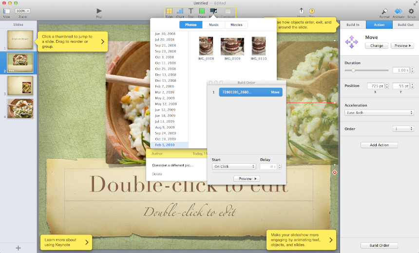
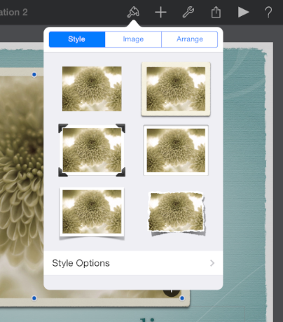
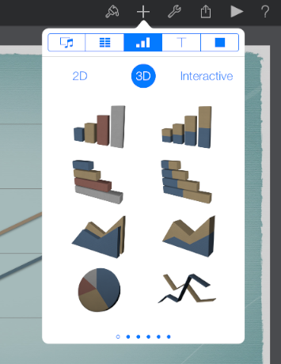
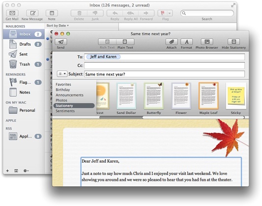
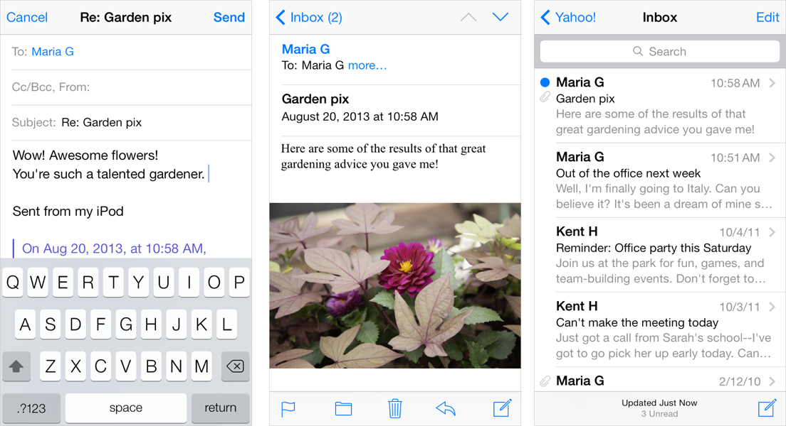

Case Study: From Desktop to iOS
Keynote on iPad
Keynote on the desktop is a powerful, flexible app for creating world-class slide presentations. People love how Keynote combines ease of use with fine-grained control over myriad precise details, such as animations and text attributes.

Keynote on iPad captures the essence of Keynote on the desktop, and makes it feel at home on iPad by creating a user experience that:
Focuses on the user’s content
Reduces complexity without diluting capability
Provides shortcuts that empower and delight
Adapts familiar hallmarks of the desktop experience
Provides feedback and communication via eloquent animation
Keynote users instantly understand how to use the app on iPad because it delivers expected functionality using native iPad paradigms. New users easily learn how to use Keynote on iPad because they can directly manipulate their content in simple, natural ways.
The transformation of Keynote from the desktop to iPad is based on myriad modifications and redesigns that range from subtle to profound. These are some of the most visible adaptations:
A streamlined toolbar. Only a handful of items are in the toolbar, but they give users consistent access to all the functions and tools they need to create their content.
A simplified, prioritized inspector that responds to the user’s focus. The Keynote on iPad inspector automatically contains the tools and attributes people need to modify the selected object. Often, people can make all the modifications they need in the first inspector view. If they need to modify less frequently changed attributes, they can drill down to other inspector views.

Lots of prebuilt style collections. People can easily change the look and feel of objects such as charts and tables by taking advantage of the prebuilt styles. In addition to color scheme, each collection includes prestyled attributes, such as table headings and axis-division marks, that are designed to coordinate with the overall theme.

Direct manipulation of content, enriched with meaningful animation. In Keynote on iPad, a user drags a slide to a new position, twists an object to rotate it, and taps an image to select it. The impression of direct manipulation is enhanced by the responsive animations Keynote on iPad performs. For example, a slide pulses gently as users move it and, when they place it in a new location, the surrounding slides ripple outward to make room for it.
Mail on iPhone
Mail is one of the most highly visible, well-used, and appreciated apps in OS X. It is also a very powerful program that allows users to create, receive, prioritize, and store email, track action items and events, and create notes and invitations. Mail on the desktop offers this powerful functionality in a couple of windows.

Mail on iPhone focuses on the core functionality of Mail on the desktop, helping people to receive, create, send, and organize their messages. Mail on iPhone delivers this condensed functionality in a UI tailored for the mobile experience that includes:
A streamlined appearance that puts people’s content front and center
Different views designed to facilitate different tasks
An intuitive information structure that scales effortlessly
Powerful editing and organizing tools that are available when they’re needed
Subtle but expressive animation that communicates actions and provides feedback
It’s important to realize that Mail on iPhone isn’t a better app than Mail on the desktop; rather, it’s Mail, redesigned for mobile users. By concentrating on a subset of desktop features and presenting them in an attractively lean UI, Mail on iPhone gives people the core of the Mail experience while they’re mobile.
To adapt the Mail experience to the mobile context, Mail on iPhone innovates the UI in several key ways.
Distinct, highly focused screens. Each screen displays one aspect of the Mail experience: account list, mailbox list, message list, message view, and composition view. Within a screen, people scroll to see the entire contents.

Easy, predictable navigation. Making one tap per screen, people drill down from the general (the list of accounts) to the specific (a message). Each screen displays a title that shows people where they are, and a back button that makes it easy for them to retrace their steps.
Simple, tappable controls, available when needed. Because composing a message and checking for new email are primary actions people might want to take in any context, Mail on iPhone makes them accessible in multiple screens. When people are viewing a message, functions such as reply, move, and trash are available because they act upon a message.
Different types of feedback for different tasks. When people delete a message, it animates into the trash icon. When people send a message, they can see its progress; when the send finishes, they can hear a distinctive sound. By looking at the subtle text in the message list toolbar, people can see at a glance when their mailbox was last updated.
Web Content in iOS
Safari on iOS provides a preeminent mobile web-viewing experience on iOS devices. People appreciate the crisp text and sharp images and the ability to adjust their view by rotating the device or pinching and tapping the screen.
Standards-based websites display well on iOS devices. In particular, websites that detect the device and do not use plug-ins look great on both iPhone and iPad with little, if any, modification.
In addition, the most successful websites typically:
Set the viewport appropriately for the device, if the page width needs to match the device width
Avoid CSS fixed positioning, so that content does not move offscreen when users zoom or pan the page
Enable a touch-based UI that does not rely on pointer-based interactions
Sometimes, other modifications can be appropriate. For example, web apps always set the viewport width appropriately and often hide the UI of Safari on iOS. To learn more about how to make these modifications, see Configuring the Viewport and Configuring Web Applications in Safari Web Content Guide.
Websites can adapt the desktop web experience to Safari on iOS in other ways, too:
Accommodate the keyboard in Safari on iOS. When a keyboard and the form assistant are visible, Safari on iPhone displays your webpage in the area below the URL text field and above the keyboard and form assistant.
Accommodate the pop-up menu control in Safari on iOS. In Safari on the desktop, a pop-up menu that contains a large number of items displays as it does in an OS X app; that is, the menu opens to display all items, extending past the window boundaries, if necessary. In Safari on iOS, a pop-up menu is displayed using native elements, which provides a much better user experience. For example, on iPhone, the pop-up menu appears in a picker, a list of choices from which the user can pick. (To learn more about the picker control, see Picker.)
Copyright © 2016 Apple Inc. All rights reserved. Terms of Use | Privacy Policy | Updated: 2016-03-21